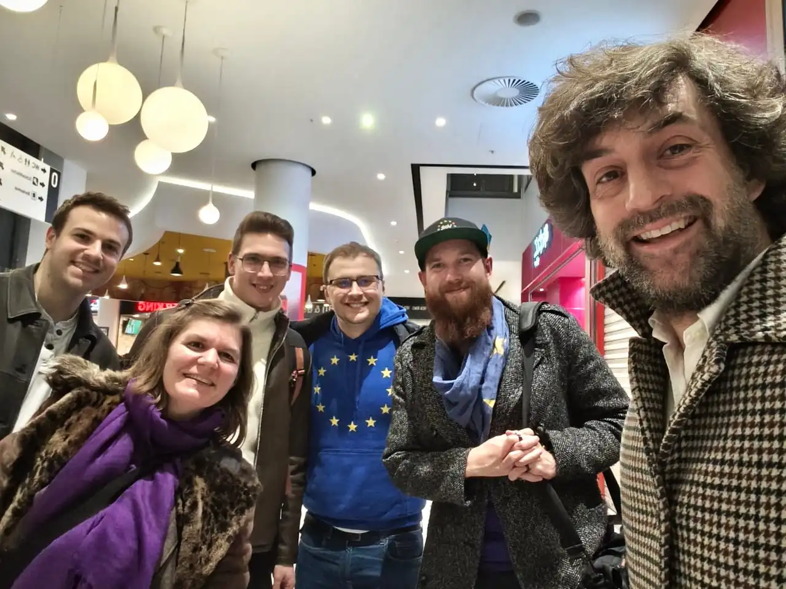
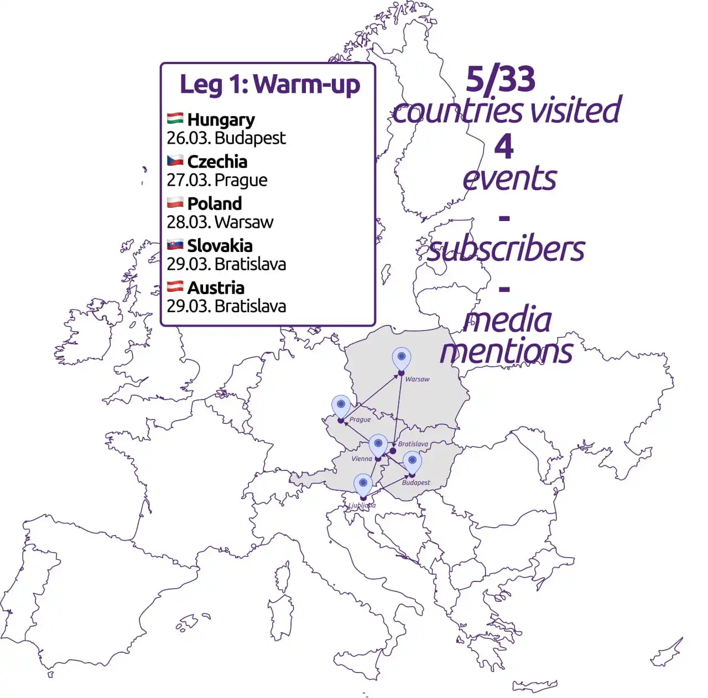
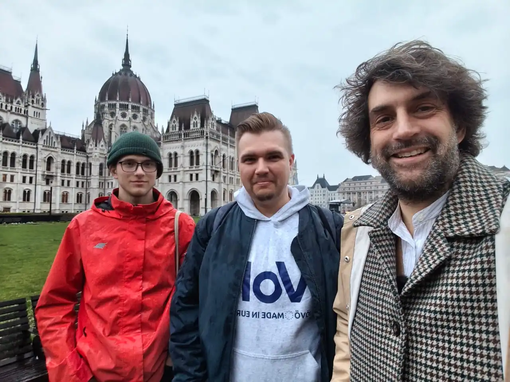
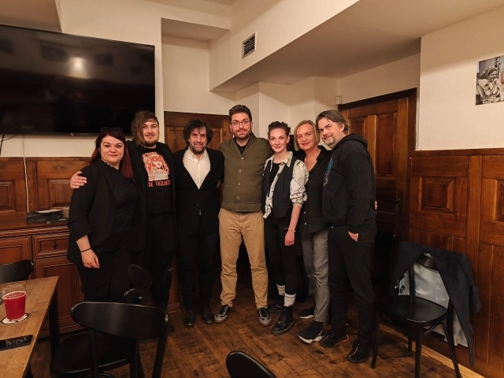
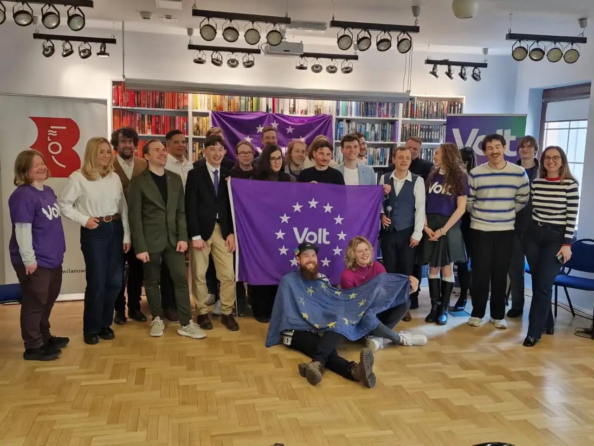
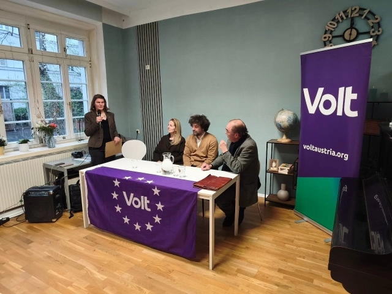

Une campagne transnationale: #1 Mise en route

Histoires de route : Mise en route

Budapest, Hongrie 🇭🇺

Notre équipe en Hongrie est encore modeste : les membres sont dispersés à travers l'Europe et seule une petite équipe est sur place à Budapest. L'atmosphère est actuellement très tendue, car une grande partie de la population attend de pouvoir pousser un soupir de soulagement après seize ans de gouvernement Orbán.
Rien n'est certain à moins d'une semaine des élections, mais pour la première fois depuis de nombreuses années, il semble y avoir une réelle chance de changement. Cela se voit dans les rues, où Orbán est omniprésent, contrôlant les publicitaires et les médias, et devant mener une véritable campagne, mettant tout en œuvre pour tenter de discréditer son adversaire Péter Magyar.
Nous avons passé quelques heures à réaliser une « visite politique » de Budapest et à débattre de l’avenir de la Hongrie en Europe. J’ai aimé l’idée qu’après que le pays a été poussé si loin en dehors de l’Europe, un changement de gouvernement pourrait aussi aller très loin dans l’autre sens. La Hongrie comme l’un des États membres les plus pro-européens ? L’idée est séduisante.
Un changement de gouvernement rouvrirait l’espace politique. Actuellement, seuls le Fidesz d’Orbán et le parti conservateur Tisza de Péter Magyar occupent l’espace. Le centre et la gauche politiques sont pratiquement inexistants. Une chance pour Volt aussi.
Après un arrêt devant le Parlement, où Orbán a retiré le drapeau européen après son élection, j’ai continué à explorer le centre-ville de Budapest et sa gastronomie, avant de prendre mon bus de minuit pour Prague.
Prague, Tchéquie 🇨🇿

Mes bouchons d'oreille n'ont pas résisté à l'épreuve, ce qui a fait que, fatigué, j’ai dû faire des efforts pour apprécier la gare de Prague à cinq heures du matin. Néanmoins, après quelques cafés et alors que le soleil se levait, je suis parti redécouvrir Prague, où je n'étais pas retourné depuis notre Assemblée générale de Volt Europa il y a de nombreuses années.
Si vous cherchez des endroits qui rappellent l'Europe, je vous recommande le mur de la liberté d'expression, sur lequel la première peinture illégale est apparue après la mort de John Lennon en 1980 et qui est rapidement devenu le lieu de prédilection pour exprimer une protestation silencieuse contre le régime communiste. Régulièrement recouvert par les autorités, mais tout aussi rapidement rempli à nouveau de poèmes contre l’oppression et la censure, ce mur continue d’être le lieu symbolisant la liberté d’expression – une valeur que l’Europe devrait chérir et défendre à l’intérieur de ses frontières et au-delà.
Lors de notre soirée avec Volt Tchéquie, nous avons réussi à inviter un universitaire à notre discussion sur le rôle de la Tchéquie au sein de l'UE. J’ai appris que le gouvernement tchèque fermait les yeux sur toute idée nouvelle concernant l’Europe ou le fédéralisme.
D’un côté, cela semble évident compte tenu de la nouvelle coalition eurosceptique d’Andrej Babiš, de l’autre, c’est surprenant car l’idée d’une plus forte intégration européenne reste populaire. Ce sera à la société civile et aux mouvements pro-européens et fédéralistes tels que Volt de définir le rôle que la Tchéquie pourrait jouer dans une Union européenne plus unie.
Nouveau trajet cette fois avec le train de nuit à destination de Varsovie.
Varsovie, Pologne 🇵🇱

Avec un retard d’environ deux heures nous sommes arrivés à Varsovie, j’ai donc quitté la gare directement vers l’Assemblée générale de Volt Pologne. C'était déjà ma deuxième Assemblée générale en Pologne et je suis heureux de voir une équipe qui s'agrandit et la Pologne faire des pas vers sa création en tant que parti politique.
Des représentants du Danemark, de la Suède, de la Norvège, de la Finlande et de la Roumanie étaient également présents, ce qui nous a permis d'organiser une excellente table ronde pour réfléchir au développement et aux défis de nos différents chapitres.
J'ai dû partir un peu plus tôt pour rencontrer un journaliste et nous avons fini par discuter pendant deux heures de la politique en Pologne, des difficultés à surmonter le poids laissé par le parti Droit et Justice (PiS) dans les institutions et du gouvernement actuel qui évite toute mention de l'Europe par crainte d'être critiqué par le parti d'extrême droite Konfederacja.
Ce parti alimente le débat sur le « Polexit » et, avec des forces modérées qui ont peur de s’exprimer et manquent de succès, il n’est pas certain que la coalition au pouvoir conserve la majorité lors des élections législatives de l’année prochaine.
Après deux heures, j'étais déjà en retard pour « We Are Europe » (celui-ci). J'ai prononcé un discours très improvisé (note à moi-même : je dois travailler là-dessus) avant de partir pour soutenir une autre manifestation en faveur d'une Biélorussie libre. Une journée bien remplie, avec beaucoup de conversations passionnantes, et enfin une nuit à l'hôtel.
Bratislava, Slovaquie 🇸🇰
Avec Fabian, qui m’avait rejoint à Varsovie, nous sommes partis pour Bratislava en direction de Vienne. Malheureusement, nous n’avons pas réussi à rencontrer l’équipe locale, occupée à organiser l’Assemblée générale, et nous nous sommes donc retrouvés assez rapidement à la (mauvaise) gare pour continuer vers Vienne.
Vienne, Autriche 🇦🇹

Avec l’équipe de Volt Autriche, nous avons passé pas mal de temps à contacter des intervenants potentiels pour une table ronde, et j’étais ravi que nous ayons réussi à avoir l’auteur Robert Menasse et la politologue Tamara Ehs comme intervenants à mes côtés pour discuter de la question de savoir si les partis modérés sont condamnés à l’échec.
Nous avons discuté bien plus longtemps que prévu au départ et, quel que soit l'angle sous lequel nous abordions le sujet, nous en arrivions généralement à la conclusion que les partis nationaux devaient assumer leurs responsabilités européennes. Cela montre que pour que l'Europe passe à l'étape suivante, il faut un leadership européen.
J'ai aussi beaucoup apprécié l'analyse de Robert Menasse selon laquelle les États-Unis représentent « l'Europe passée », qui s'est emparée de terres, a exterminé les populations autochtones et mené des guerres d'unification, tandis que « l'Europe d'aujourd'hui » (et de demain) se développe grâce à des pays désireux de la rejoindre, chérit la diversité de chacun et cherche à s'unir par la coopération. Nous ne devrions pas parler d’États-Unis d’Europe ou d’Europe fédérale uniquement à cause de Donald Trump, mais parce que l’Europe incarne une idée différente, à laquelle nous devons désormais donner vie.
Nous avons terminé aux petites heures du matin en discutant de la « neutralité » – car 60 % de la population en Autriche n’était pas disposée à venir en aide à un pays voisin en cas d’attaque. L’Autriche n’est pas la Suisse, et nous avons conclu la soirée en formulant le souhait que l’Autriche prenne plus au sérieux son rôle au sein de l’Union européenne, par exemple en contribuant à définir la neutralité européenne. De quoi nourrir la réflexion.
Je suis rentré chez moi à Ljubljana avec tant d’impressions, d’idées et de perspectives que j’attends déjà avec impatience la suite. Ma prochaine étape me mènera à Chypre, en Roumanie, en Bulgarie, en Grèce et en Albanie. Restez à l’écoute.
À très vite et merci pour votre soutien 💜
Sven